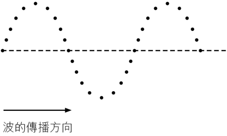
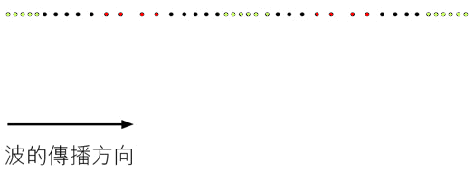

橫波介紹
粒子的振動方向 垂直於 波的傳播方向、波形包含一連串波峯和波谷（圖像較清晰部分為波峰和波谷）。

總結
橫波和波上的粒子有以下關係：
| |
波動 |
粒子運動 |
| 振幅 |
粒子的振幅 = 波的振幅，（波上所有粒子的振幅相同，也與波的振幅相同） |
| 週期 |
粒子的周期 = 波的周期，（波上所有粒子以相同的週期和頻率振動） |
| 頻率 |
粒子的頻率 = 波的頻率，（波上所有粒子以相同的週期和頻率振動） |
| 波長 |
- |
| 波速率 |
- |
縱波介紹
粒子的振動方向 平行於 波的傳播方向、波形包含一連串密部與疏部（黃色部分為密部，紅色部分為疏部）。

總結
縱波和波上的粒子有以下關係：
| |
波動 |
粒子運動 |
| 振幅 |
波動中振動部分與平衡位置的最大距離 |
粒子振動時與平衡位置的最大距離 |
| 週期 |
產生一個完整波所需的時間 |
粒子完成一次完整振動所需的時間 |
| 頻率 |
一秒內產生的完整波數目 |
粒子在一秒內振動的次數 |
| 波長 |
波形重複的最短距離 |
- |
| 波速率 |
波在一秒內行進的距離 |
- |